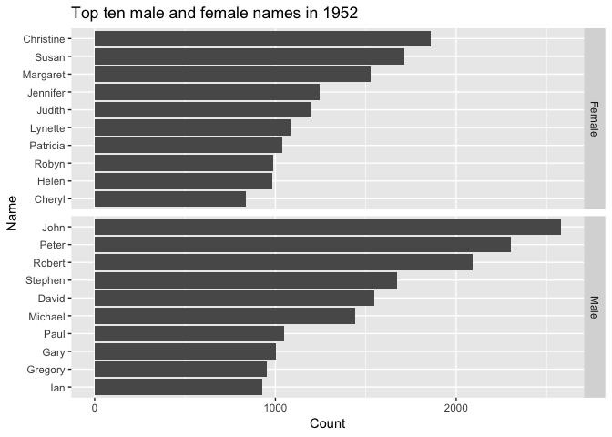
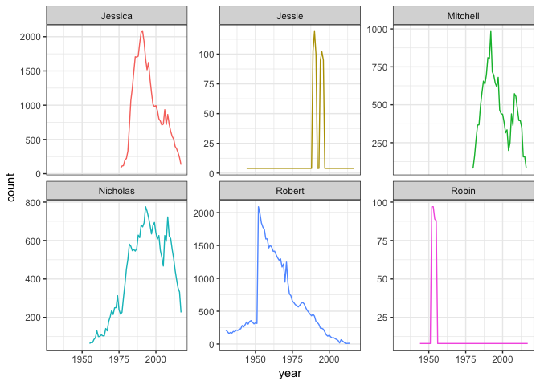
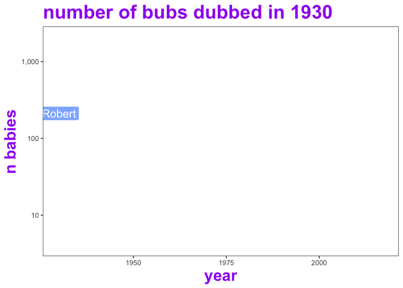

The ozbabynames package provides the dataset ozbabynames. This contains popular Australian baby names by sex, state and year.
library(ozbabynames)
head(ozbabynames)
#> name sex year count state
#> 1 Charlotte Female 2017 577 New South Wales
#> 2 Olivia Female 2017 550 New South Wales
#> 3 Ava Female 2017 464 New South Wales
#> 4 Amelia Female 2017 442 New South Wales
#> 5 Mia Female 2017 418 New South Wales
#> 6 Isla Female 2017 392 New South WalesInstallation
You can install the released version of ozbabynames from github:
install_github("ropenscilabs/ozbabynames")Example usage
library(ggplot2)
library(dplyr)
#>
#> Attaching package: 'dplyr'
#> The following objects are masked from 'package:stats':
#>
#> filter, lag
#> The following objects are masked from 'package:base':
#>
#> intersect, setdiff, setequal, union
ozbabynames_1952_top_10 <- ozbabynames %>%
filter(year == 1952) %>%
group_by(sex, name) %>%
summarise(count = sum(count)) %>%
arrange(-count) %>%
top_n(10) %>%
ungroup()
#> Selecting by count
ggplot(ozbabynames_1952_top_10,
aes(x = reorder(name, count),
y = count,
group = sex)) +
geom_col() +
facet_grid(sex ~ .,
scales = "free_y") +
coord_flip() +
ylab("Count") + xlab("Name") +
ggtitle("Top ten male and female names in 1952")
And let’s look at the popularity of the package author names, “Rob”, “Mitchell”, “Nicholas”, and “Jessie”, as well as some similar names.
author_names <- c("Robin", "Robert", "Mitchell", "Nicholas", "Jessie", "Jessica")
ozbabynames %>%
filter(name %in% author_names) %>%
group_by(name, year) %>%
summarise(count = sum(count)) %>%
ggplot(aes(x = year,
y = count,
colour = name)) +
geom_line() +
theme_bw() +
facet_wrap(~name,
scales = "free_y") +
theme(legend.position = "none")
And let’s see that animated
devtools::install_github('thomasp85/gganimate')
library(gganimate)
ozbabynames %>%
filter(name %in% author_names) %>%
count(name,year, wt = count) %>%
ggplot(aes(x = year,
y = n,
colour = name,
group = name,
label = name,
fill = name)) +
geom_line(size = 1, linetype = "dotted") +
geom_label(colour = "white", alpha = 0.75, size = 5) +
theme_bw() +
theme(panel.grid = element_blank(),
legend.position = "none",
title = element_text(colour = "purple",
size = 20,
face = "bold")
) +
labs( title = "number of bubs dubbed in {frame_along} ",
y = "n babies" ) +
scale_y_log10(labels = scales::comma) +
transition_reveal(id = name, along = year) +
enter_grow(fade = TRUE) +
exit_shrink(fade = TRUE)